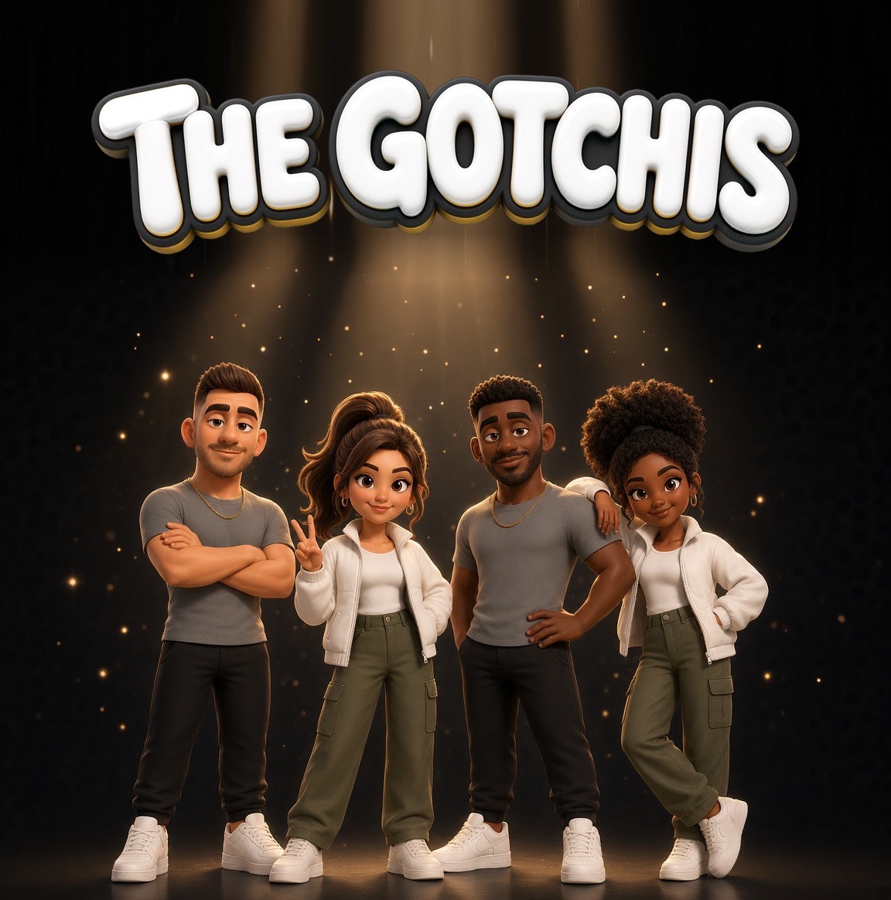

The Neighborhood
This is where Bro and Bae live. At dusk, the windows light up and amber light spills onto the sidewalk past the rounded doors.
A new world from the House


Bro and Bae are The Gotchis, two original 3D animated characters with their own style and their own neighborhood. The poster shows two looks for Bro and two for Bae. We’re building an app where you can step into their world, explore the block and pick out what they wear.
Take a look insideThe world
Take a look around the block and inside Bro and Bae’s world.
This is where Bro and Bae live. At dusk, the windows light up and amber light spills onto the sidewalk past the rounded doors.

A dark desk, a warm lamp and a window overlooking the block. This is where Bro keeps an eye on the $XRP chart.

White puffers, fitted gray tees, olive cargos and black joggers. Gold chains hang on hooks, and the clean white sneakers get their own shelves.
Environment concept art.
The Gotchis